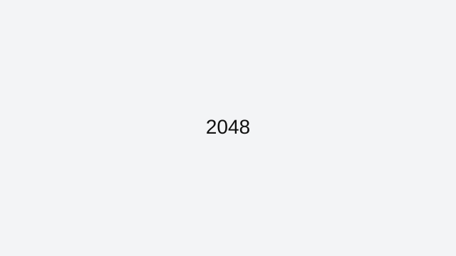

2048
2048 looks simple, but the game punishes random swipes fast. The goal is not just making one 2048 tile. The real challenge is controlling board space so you can keep merging without creating dead corners.
How to approach this game
The most reliable method is to keep your highest tile locked in one corner and build a descending line next to it. Swipe in two directions most of the time, and use the opposite direction only when you are forced to reset the row. This keeps new tiles predictable and lowers panic moves.
Common mistakes to avoid
Most losses happen when players chase small merges in the center or break their corner too early. If you need one emergency move, take it, then rebuild shape immediately instead of trying to force a perfect board again.
Who this game is best for
If you like puzzle games that reward consistency over speed, 2048 is one of the strongest browser choices. It is easy to start in under a minute and still gives long-term skill progression.
Why it stays in our curated index
2048 stays in ArcadeZone's reviewed collection because it has a clear skill loop, reliable browser access, and enough real gameplay depth to justify written guidance. We do not keep indexed pages that only repeat generic descriptions or send users to thin external links.
Best session style for this game
Featured picks are chosen because they stay enjoyable even in quick sessions and still offer room to improve after the basics click.
Related reviewed games: Pac-Man, Snake, Flappy Bird.
What you'll love
- Curated review page with practical strategy guidance and clean navigation.
- Direct access to browser gameplay source with no installs required.
- Category fit: Featured gameplay style with related recommendations.
Game essentials
- Category: Featured
- Game type: Puzzle
- Page status: Indexed (reviewed)
- Play format: opens the original browser source in a new tab

How to play
Use the built-in browser controls shown by the game source and focus on timing plus positioning to improve consistency.
Tips & Tricks
- The most reliable method is to keep your highest tile locked in one corner and build a descending line next to it. Swipe in two directions most of the time, and use the opposite direction only when you are forced to reset the row. This keeps new tiles predictable and lowers panic moves.
- Most losses happen when players chase small merges in the center or break their corner too early. If you need one emergency move, take it, then rebuild shape immediately instead of trying to force a perfect board again.
- Practice in short sessions and track one improvement goal per run to build measurable progress.
Frequently asked questions
What is the best first goal in 2048?
Focus on keeping your highest tile in one corner and maintaining board shape. High tiles come naturally when your board stays organized.
Should I always chase 2048 immediately?
No. Stable positioning matters more. Many players reach 2048 late in a run after prioritizing survival and clean merges.
Is 2048 better on keyboard or touch?
Keyboard is usually more precise, but touch works well once you keep swipes short and deliberate.
Play
Use the verified source link below to launch the game in a new tab.
Open 2048 (external)Related games
Related reviewed games: Pac-Man, Snake, Flappy Bird.
More from ArcadeZone
Developer & Credits
ArcadeZone reviews 2048 for control clarity, replay value, and accessibility before listing it as curated content. We link to the original browser source and provide player-focused guidance on this page.